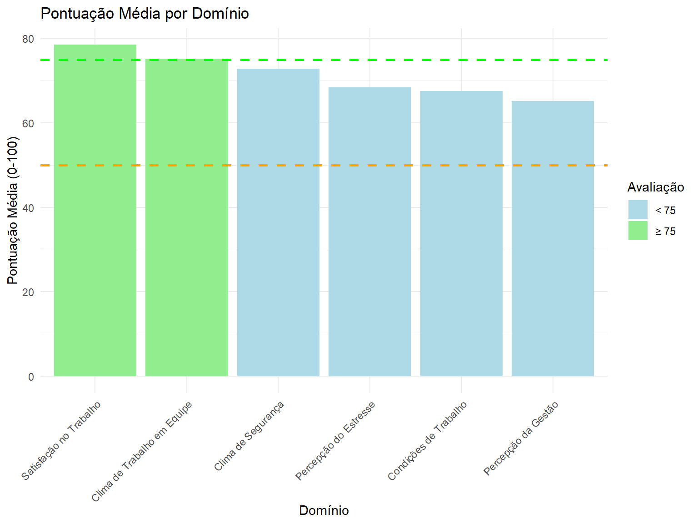
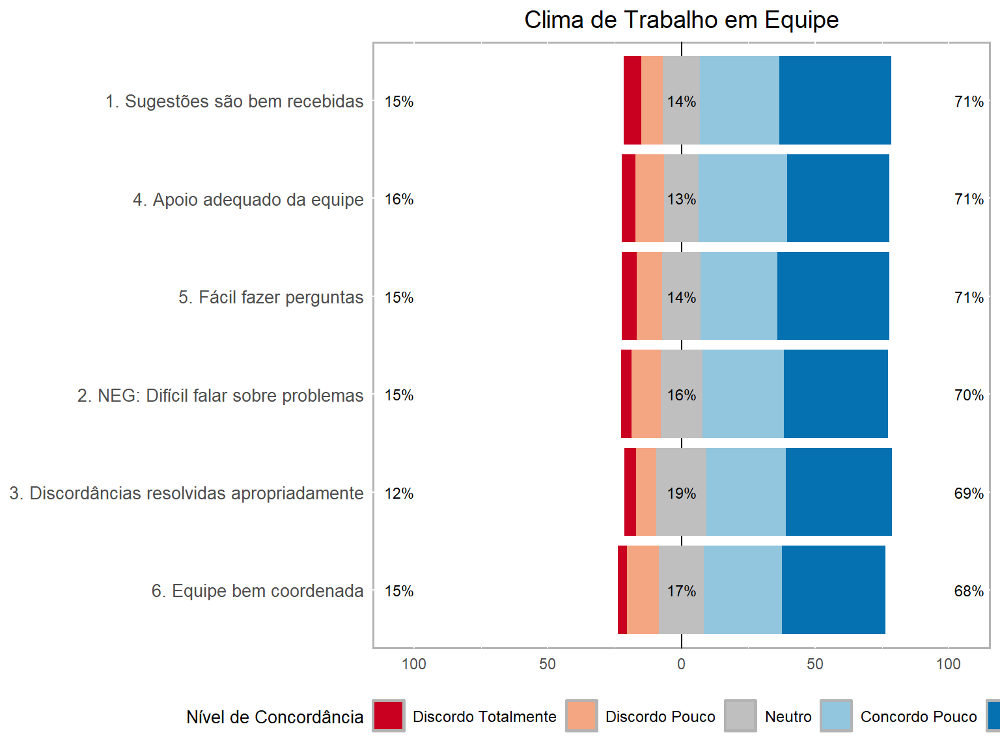
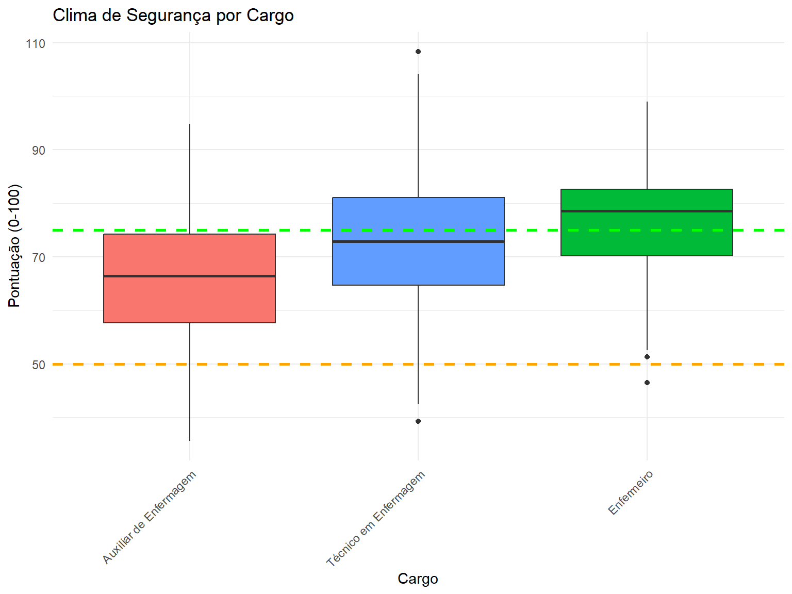

Código
# Carregar bibliotecas necessárias
library(tidyverse)
library(gt)
library(knitr)
library(sf)
library(ggspatial)
library(likert)
library(RColorBrewer)Este documento apresenta uma análise estruturada do clima de segurança em salas de vacinação, baseada em questionários aplicados a profissionais de enfermagem. A pesquisa avalia diferentes domínios do clima de segurança, incluindo trabalho em equipe, percepção de segurança, satisfação no trabalho, entre outros.
Os dados foram coletados por meio de questionários respondidos por profissionais que atuam em salas de vacinação em diversos municípios de Minas Gerais. O instrumento de coleta incluiu 36 questões distribuídas em seis domínios principais:
# Carregar bibliotecas necessárias
library(tidyverse)
library(gt)
library(knitr)
library(sf)
library(ggspatial)
library(likert)
library(RColorBrewer)| Domínio | Questões | Nº de Itens |
|---|---|---|
| Clima de trabalho em equipe | 1-6 | 6 |
| Clima de Segurança | 7-13 | 7 |
| Satisfação no trabalho | 15-19 | 5 |
| Percepção do estresse | 20-23 | 4 |
| Percepção da gestão | 24-29 | 6 |
| Condições de trabalho | 30-32 | 3 |
| Itens não correlacionados | 14, 33-36 | 5 |
O processamento dos dados seguiu estas etapas principais:
A classificação geral do clima de segurança é baseada na média das 36 questões, considerando: - Positivo: Pontuação média ≥ 75 - Neutro: Pontuação média entre 50 e 74,9 - Negativo: Pontuação média < 50
| Distribuição da Classificação Geral do Clima de Segurança1 | ||
|---|---|---|
| Classificação do Clima | N | Percentual (%) |
| Positivo | 280 | 56.0 |
| Neutro | 180 | 36.0 |
| Negativo | 40 | 8.0 |
| 1 Classificação baseada na média das 36 questões. | ||
As pontuações médias por domínio permitem identificar áreas de força e oportunidades de melhoria no clima de segurança das salas de vacinação.

Os gráficos Likert mostram a distribuição das respostas em cada domínio, permitindo visualizar a proporção de concordância e discordância para cada conjunto de questões.

Os resultados mostram variações na percepção do clima de segurança de acordo com cargo, formação, idade e localização geográfica.
| Análise do Clima de Segurança por Cargo | |||||
|---|---|---|---|---|---|
| Cargo | N | Média | Desvio Padrão | Mediana | Clima Positivo (%) |
| Enfermeiro | 150 | 77.5 | 10.2 | 79.0 | 65.3 |
| Técnico em Enfermagem | 280 | 71.8 | 12.5 | 73.5 | 48.2 |
| Auxiliar de Enfermagem | 70 | 68.2 | 13.8 | 70.0 | 35.7 |

A análise da distribuição geográfica permite identificar diferenças regionais no clima de segurança em salas de vacinação.

A análise do clima de segurança em salas de vacinação revela os seguintes pontos principais:
A maioria dos profissionais percebe um clima de segurança positivo nas salas de vacinação.
Os domínios de “Satisfação no Trabalho” e “Clima de Trabalho em Equipe” apresentam as melhores pontuações, indicando uma força a ser mantida.
Os domínios de “Percepção da Gestão” e “Condições de Trabalho” mostram oportunidades de melhoria.
Há variações significativas na percepção do clima de segurança de acordo com o cargo, formação e localização geográfica.
Enfermeiros tendem a avaliar o clima de segurança de forma mais positiva que técnicos e auxiliares de enfermagem.
Existem diferenças regionais na percepção do clima de segurança, com algumas macrorregiões apresentando pontuações consistentemente mais altas.
Com base nos resultados, recomenda-se:
Implementar programas de melhoria focados nos domínios com pontuações mais baixas.
Desenvolver intervenções específicas para técnicos e auxiliares de enfermagem, que apresentam percepções menos positivas do clima de segurança.
Compartilhar boas práticas entre as macrorregiões com melhores pontuações para aquelas com maior oportunidade de melhoria.
Estabelecer um sistema de monitoramento contínuo do clima de segurança em salas de vacinação.
Realizar estudos complementares para entender os fatores contextuais que influenciam as diferenças regionais encontradas.